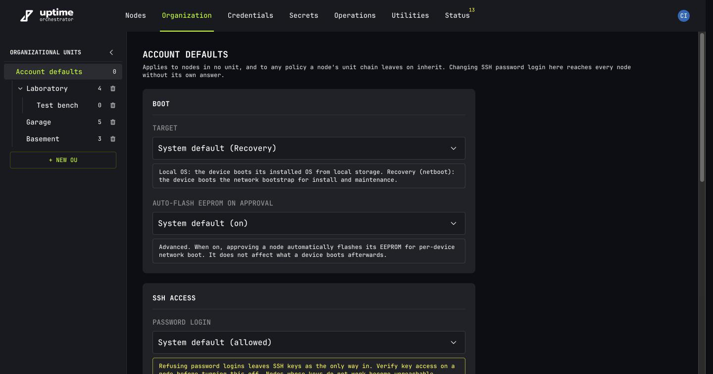
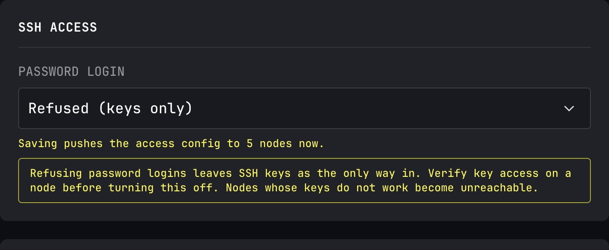
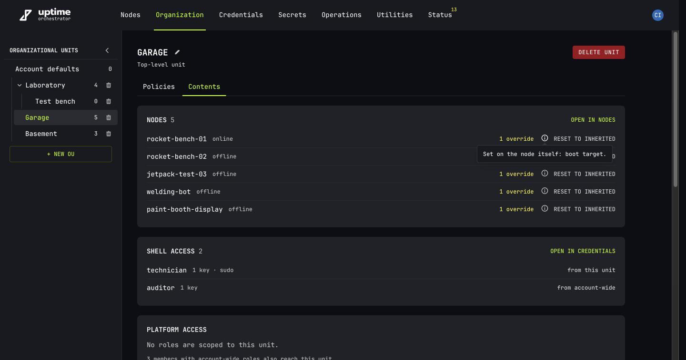
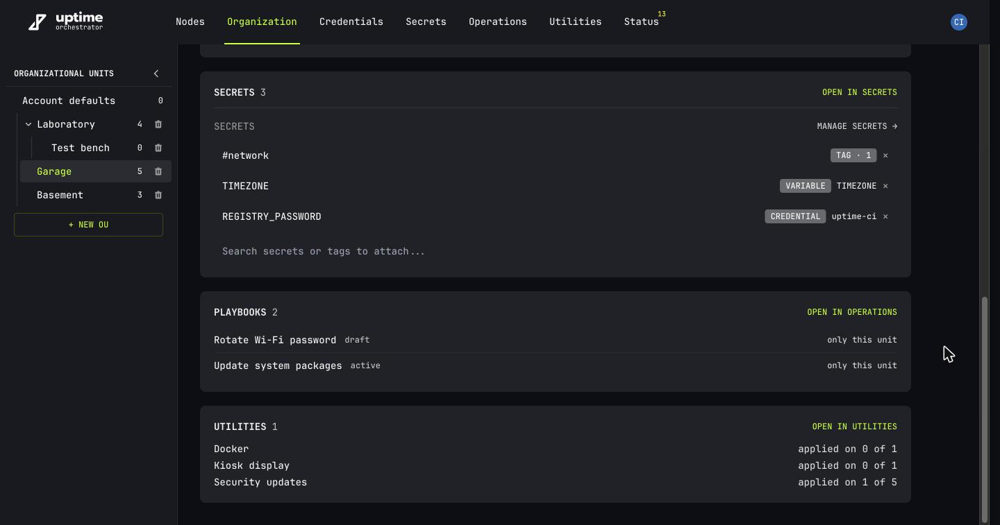
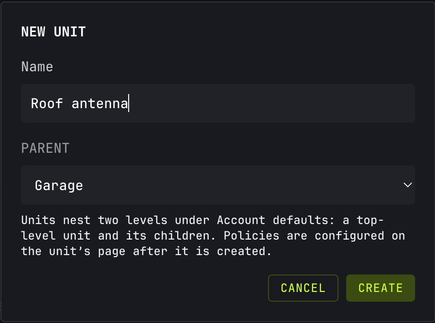
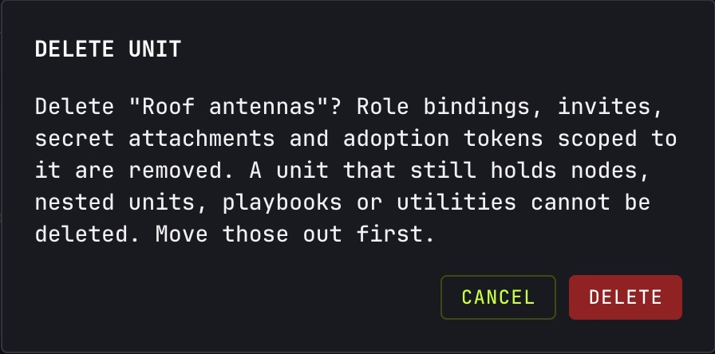
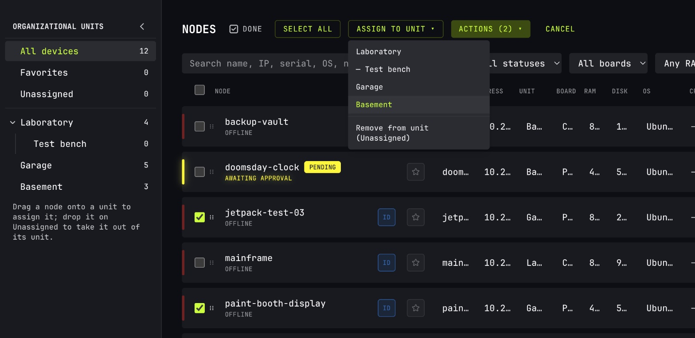

Organizational units and policies
Group nodes into units, set boot, SSH, install, hardware and watchdog policies once, and let every node in the unit inherit them.
An organizational unit is a named group of nodes, such as a room, a site or a product line. You attach things to a unit once — policies, SSH users, secrets, playbooks, utilities — and they reach every node in it, including nodes you move in later. This page owns that model, which the pages on access, secrets and utilities build on, and covers the Organization page where you build the tree and set policies.
How units and inheritance work
Units form a tree two levels deep under Account defaults: top-level units and their child units. The example account has Laboratory (with Test bench under it), Garage and Basement. A node belongs to at most one unit. A node in no unit is Unassigned.
Everything you attach follows one of two rules:
- Policies resolve to one value. For each policy field, the platform walks up from the node: the node's own setting, then its unit, then the parent unit, then Account defaults, then the built-in system default. The first level that answers wins. A level that says Inherit passes the question up.
- Access users, secrets and utilities add up. A node receives everything attached to its own node, its unit, the parent unit and the whole account. Where two levels define the same thing (the same OS username, the same secret, the same utility), the nearer level wins.
On a unit page, a field left on Inherit shows a line under it such as Effective: Recovery (netboot) (from system default), so you always see the value that actually applies and where it comes from. The possible sources are this unit, parent unit, account default and system default.
The Organization page
Open Organization in the top bar. The left rail is the unit tree, with the number of nodes in each unit. The first row, Account defaults, is selected when the page opens.

Account defaults applies to nodes in no unit and to every policy a node's unit chain leaves on inherit. Here the choice that means "no opinion" is labelled with the system default it falls back to, for example System default (Recovery), rather than Inherit.
Click a unit in the rail to open it. The header shows its name with a pencil to rename it, where it sits (Top-level unit, or Nested under Garage) and a Delete unit button. Two tabs follow: Policies and Contents.

Policy fields
Both Account defaults and every unit show the same five cards. Change what you need and click Save policies at the bottom; a Saved note confirms it. If your role can only read policies, the form is disabled and says so.
Boot
| Field | Options | What it does |
|---|---|---|
| Target | Inherit, Local OS, Recovery (netboot) | Which system a device boots. Local OS boots the OS installed on local storage. Recovery (netboot) boots the network bootstrap used for installs and maintenance. The system default is Recovery. |
| Auto-flash EEPROM on approval | Inherit, On, Off | When on, approving a node automatically flashes its EEPROM for per-device network boot. It does not change what the device boots afterwards. The system default is on. |
A node with an installed OS usually carries its own Local OS target, because the system default is Recovery. That is why the Garage nodes show "1 override" on the Contents tab (see below): their boot target is answered on the node, not by the unit. Installing an operating system owns the full explanation of boot targets.
SSH access
Password login controls whether sshd on the nodes accepts passwords. Options: Inherit, Allowed, Refused (keys only). The system default is allowed.
This is the one field on the page that is sent to devices as soon as you save. When you change it, a yellow line tells you how many nodes will receive the new SSH configuration, before you save.

Changing this at Account defaults reaches every node that has no answer of its own, which can be the whole fleet. A node can still override the unit in its own panel.
Install
Default image is the OS image installed when an install does not name one, for example an install started from a playbook. At account level the empty choice is None (choose per install); on a unit it is — Inherit —. The example account uses Ubuntu Server 26.04.1 as the account default. You can also set it by dragging an image onto a unit in Operations → Install images.
Hardware
Platform declares what hardware the nodes are: the carrier board, its factory variant and plugged modules. After you pick a board, the card shows the board's variants, LED behaviour (for example Stealth mode, Activity LED off, Power LED off and the digital LEDs some carriers have) and Modules it can host, such as an RTC module. At account level the empty choice is None (not declared).
Saving only stores the declaration. Nothing reaches a device until you apply it: either per node, or with Apply hardware profile to N nodes at the foot of the card on a unit page. Applying needs a reboot afterwards, and the platform never reboots for you. See Hardware and watchdog.
Watchdog
Supervision is either inherited (None (not declared) at account level) or Declared for this scope. Declaring shows the watchdog fields: what to watch (agent health, OS hang, network reachability), load, temperature and memory thresholds, and timing. As with hardware, saving arms nothing: each node receives the setting through its own watchdog apply, and the device runs its own pre-arm checks. The fields are explained in Hardware and watchdog.
The Contents tab
Contents lists what the unit holds and what reaches it, each section with a link to the page where you manage it.

- Nodes — each node with its status. N override(s) means the node answers some policy fields itself; hover the icon to see which. Reset to inherited clears all of that node's own policy settings after a confirmation, so it follows the unit again.
- Shell access — the access users that reach this unit's nodes and where each comes from: from this unit, from parent unit or from account-wide. In Garage,
technician(with sudo) is set on the unit andauditorcomes from the account. - Platform access — team members who hold a role on this unit, and Grant on this unit to give one. See Team and security.
- Secrets, Playbooks and Utilities — what is attached here. You can attach a secret or a tag directly from the search box.

Under Utilities, "applied on 1 of 5" means one node in the unit has confirmed the current configuration. Garage lists Kiosk display and Docker too, although they are assigned to a single node (paint-booth-display) rather than to the unit.
Create, rename, nest and delete a unit
- Click + New OU under the tree.
- Type a Name.
- Choose a Parent: None — a top-level unit under Account defaults, or one of the top-level units. Only top-level units are offered, because units nest two levels deep.
- Click Create. The new unit opens; set its policies there.

A new unit inherits everything from its parent and the account: before you set anything, its Contents already shows the parent's shell access users.
To rename a unit, click the pencil next to its name, edit it and press Enter. To move a unit under another parent, drag it in the rail onto the new parent. Moving a unit re-sends the access configuration to its nodes, because the users they inherit change with the parent.
To delete a unit, click Delete unit on its page or the bin icon in the rail.

Deleting removes the role bindings, invitations, secret attachments and adoption tokens scoped to the unit. It is refused while the unit still holds nodes, nested units, playbooks or utility assignments: move those out first. Deleting a unit therefore never orphans a node. Once you move its nodes elsewhere, they follow their new unit's policies.
Put nodes into a unit
There are three ways:
- From the Nodes page. Click Select / assign to unit above the table, tick the nodes, open Assign to unit and pick a unit, or Remove from unit (Unassigned).
- By dragging. In selection mode, drag a node's row by its handle onto a unit in the left rail; drop it on Unassigned to take it out of its unit.
- From the node panel. On a node's Overview, the Unit row has a Move button.

A moved node immediately resolves its policies, users, secrets and utilities from the new unit. Access changes are pushed to it automatically; utilities and hardware or watchdog settings follow the rules on their own pages.
You can also place new devices into a unit at adoption: an adoption token can name an Adoption OU (see Secrets and variables).